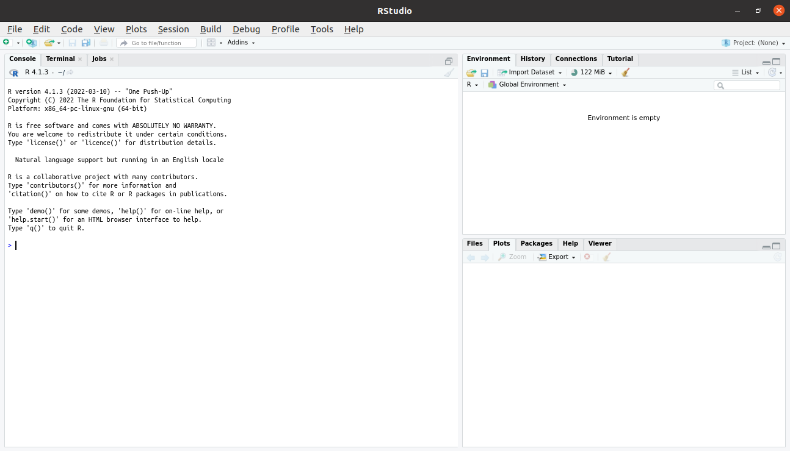
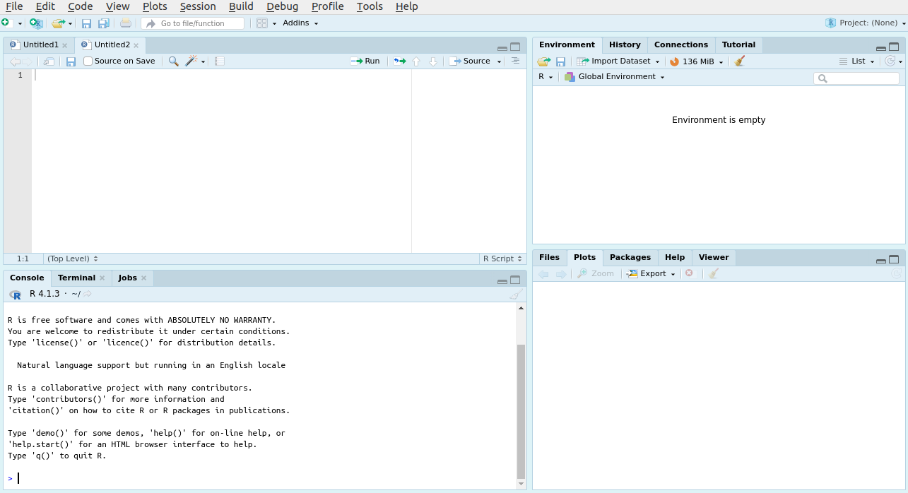
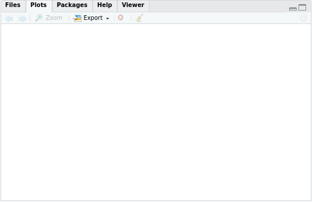
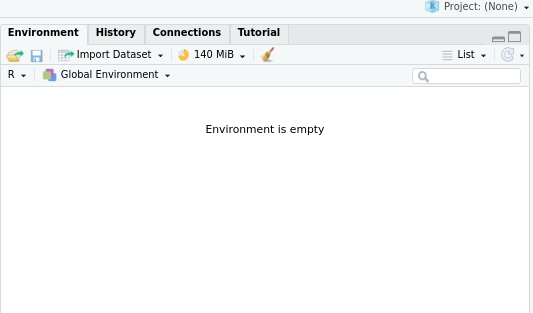

To actually write R code, you will need to use RStudio. When you open the application, you will see something like this:

You'll need to create a new file to begin writing your code. You can do that
with either a .R or .Rmd
file like so:
You'll now see there are four distinctive areas of the RStudio window. You can control where each of these panels exists, but this is the default layout:

The top left panel is where you'll spend most of your time. This is where
your script files (i.e. .R or .Rmd files)
will be displayed, and where you'll write code.
You can have multiple scripts/files open at once and toggle between them.
The console is your direct connection to R. You can type out code onto the
line with the carrot > and press enter, to execute that line
of code. However, note that here unlike code written in a script, that
code will not be saved for you to run again.
When RStudio first starts up, you'll notice that it prints out the version of R that it is currently running.
There are two other tabs here "Terminal" and "Jobs" which can be ignored for the beginner.
To use R in the most basic sense, you can begin typing on the row with the
small arrow (>) and press enter. The output will be printed
directly below.
This bottom right corner is where you can see any current plots, and the files on your computer that are in your current working directory.
You'll notice that there is no plot displayed right now, but should we generate a plot and display it from a script, it would pop up here for us to view. If we navigate to the "Files" tab, we would see the files that are in the current directory that RStudio is working in.
This top right panel is an important one. R will display all the objects you create through the course of your programming here. That is, any variables or functions you create, with the name and a brief description will be here. To view these objects when they exist, you may click on them directly from the environment panel.
The beginner may ignore the other tabs in this panel.
RStudio is a really rich environment for programming. Once you're familiar with the basics, it can really speed up your work to learn a few shortcuts or tips and tricks. We recommend you become familiar with generally how the software works, then once you're comfortable you can branch out.
Here is a link to some tips & tricks to get you started
The EEB R Manual is the work of researchers at the University of the Toronto
and intended as a purely educational resource. It holds no official
association with the R Foundation. It should not be taken as an
authority on R best practices.
When using this resource,
This content is reviewed regularly for errors and to make improvements, but
no assurances can be made that any material presented here is 100% accurate.